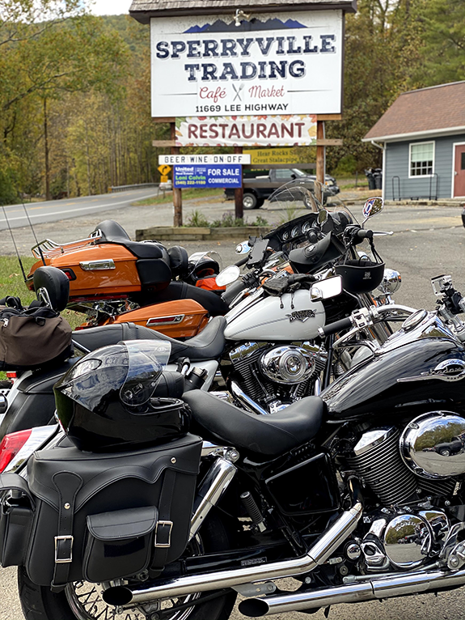
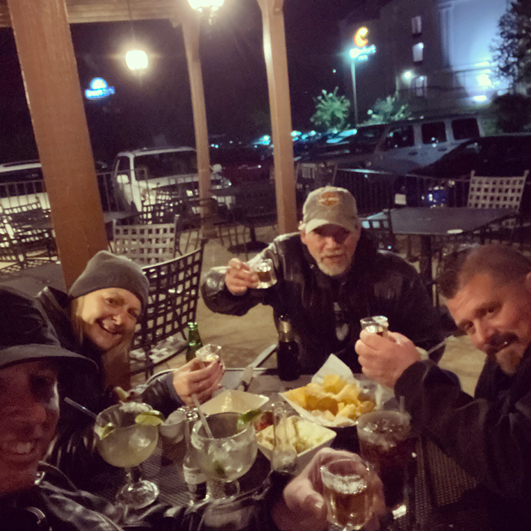
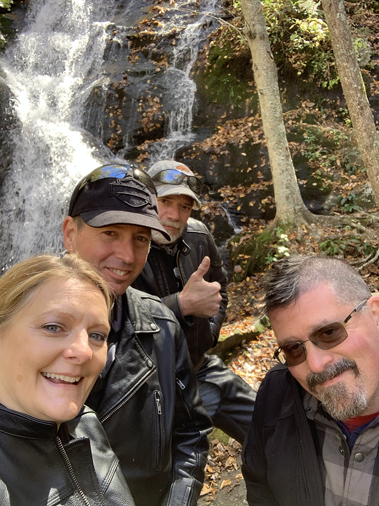
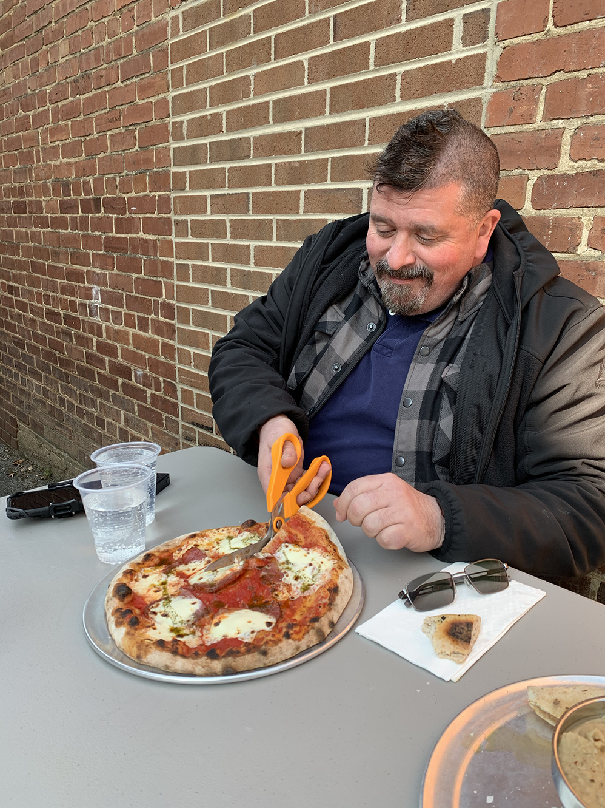
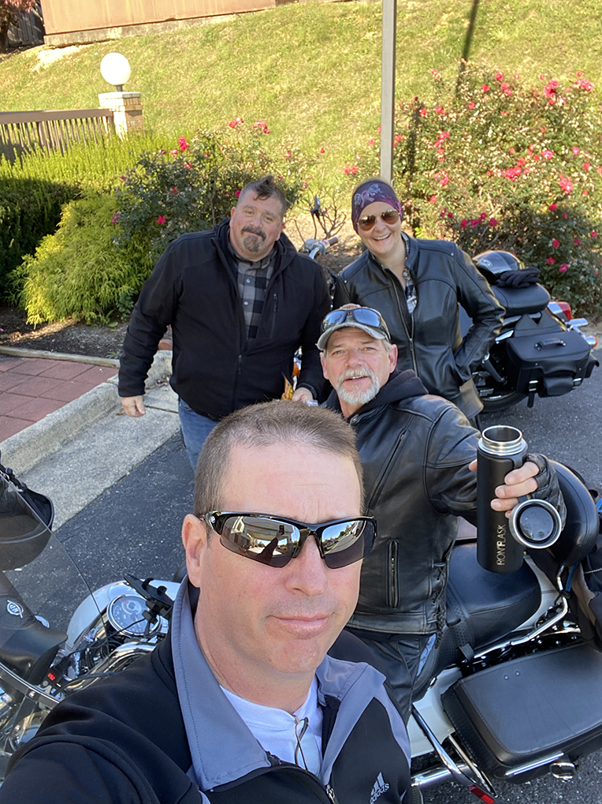
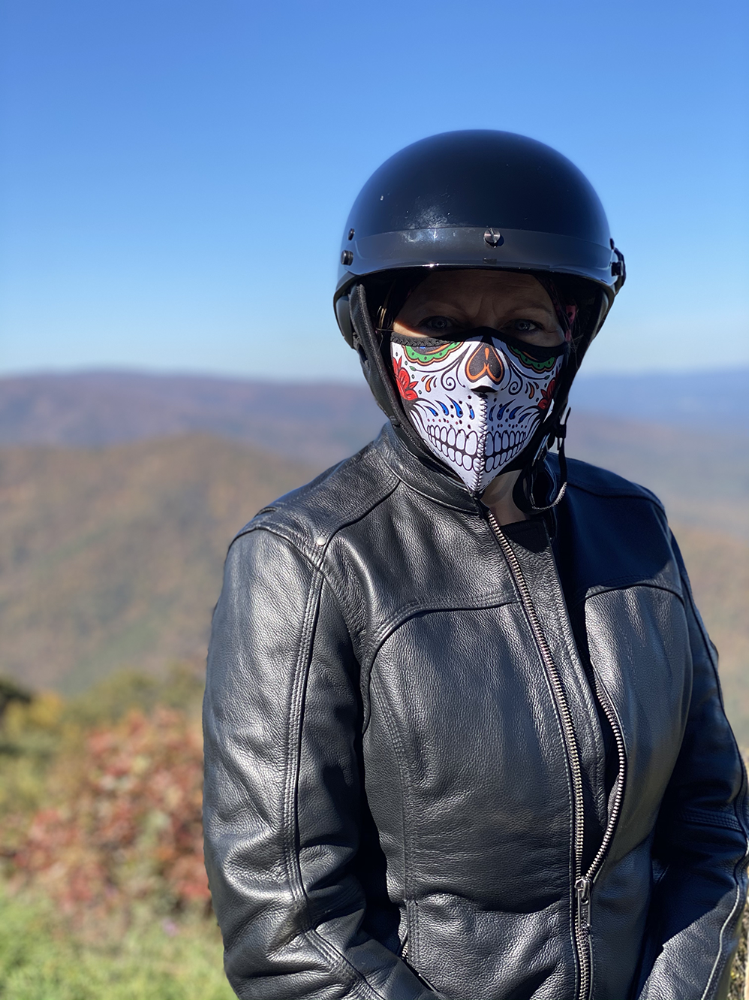
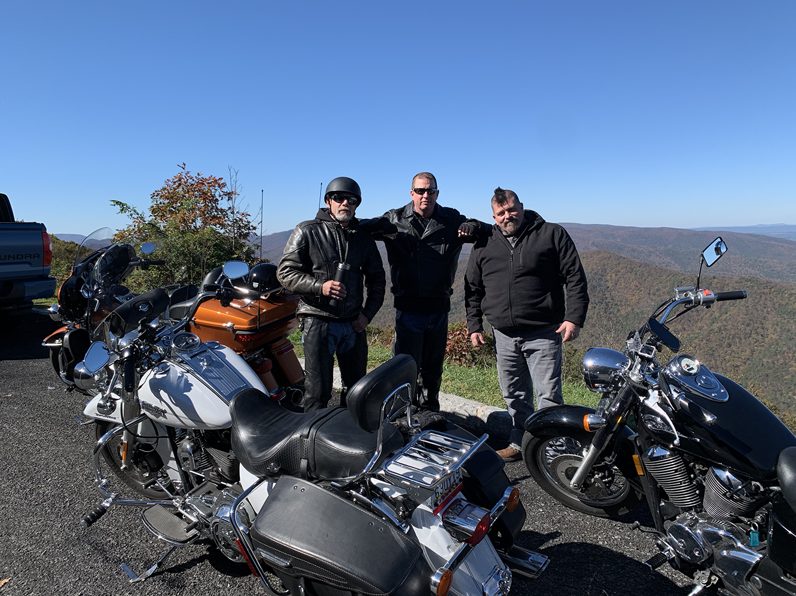
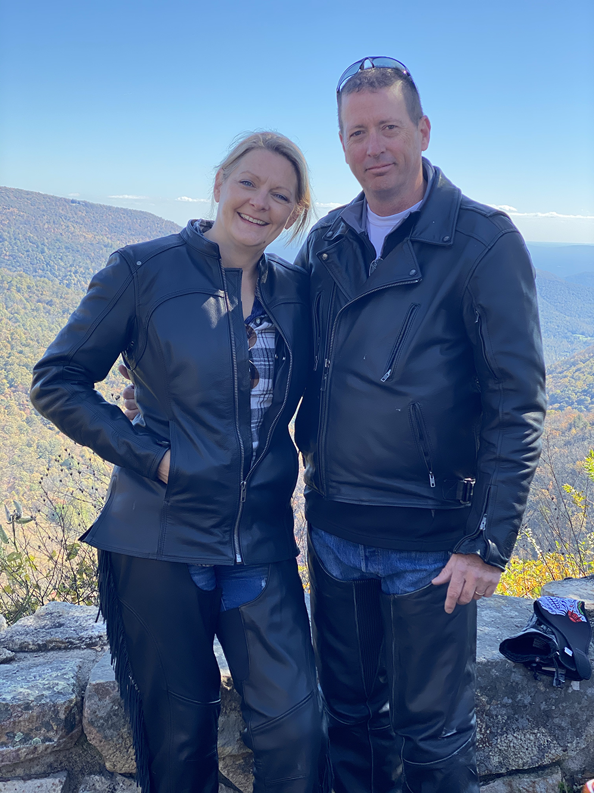

Trip Recap
The trip was a lot of fun! After a lot of planning, we took a three day motorcycle trip with some friends. A lot of our plans had to change along the way, but everyone had a good time. If you have landed on this page directly, you might want to view the page I posted to document our planning. I also posted some pictures to Instagram in addition to what is posted here.
On this trip was:
- Me (Scott) and my wife Cindi on our 2014 Harley Davidson Electra Glide Ultra Limited.
- Doug on his 2012 Harley Davidson Road King Classic.
- Gary on his 2002 Honda Shadow VT750cda (Honad).
Day One
Our plans changed more than once but we eventually decided to meet up near Harper's Ferry at 9:30 and then set out together. Our first (and only) mishap happened in the parking lot where we met. I was making a U-turn and dumped my bike, injuring Cindi's already injured ankle. We were not moving fast at all, but her leg was pinned under the weight of the bike. Some hikers nearby helped us lift the motorcycle off of her leg. After getting past the initial shock, she determined that the injury wasn't enough to require medical attention or to cancel the trip. I can't even begin to express how upset I was (and still am) over this incident. This was the first time I have ever put my bike down with a passenger on the back. The fact that the passenger was my wife made it a lot worse. The motorcycle took some cosmetic damage and the clutch handle broke about an inch off but otherwise it was fine.
After the excitement of our little crash was over, we set out on the first leg of our trip. The ride to Front Royal was really nice. The weather was cloudy but warmer than expected. We knew there was rain in the forecast but up until that point it looked like we might get lucky and dodge it. We rode to Front Royal and stopped for gas. Route 340 runs all the way from Frederick, MD to Waynesboro (our destination) but we decided to take route 522 which is called Zachary Taylor Highway or Lee Highway depending on which section of the road you are on to the small town of Sperryville where we would pick up route 211. Sperryville is home to a little place called Head Master's Pub which was our planned stop for lunch. As it turns out, Head Master's Pub doesn't open until 4:00 on Fridays! While we were cursing our bad luck (if you can call neglecting to check the business hours of a restaurant bad luck) a school bus pulled into the parking lot. I asked the driver if there was another place we could go and she directed us to the Sperryville Trading Post. We hopped on our bikes and drove there in a few minutes.
The place was fairly crowded but the food looked decent, they had outdoor seating and they served beer. That checked all of our requirement boxes so we
decided to eat there. Our decision may have been influenced further by the fact that there wasn't anyplace else to go. While we waited for our order to be prepared,
we made a new friend!  We had a nice lunch and checked
the weather before heading out. The radar showed us that our luck was soon to run out in regards to rain. The storm that had been mostly
staying on the western side of the mountains looked to be crossing over. After some debate, we agreed to change our planned route which was
to continue on 211 over the mountain, pass under the Thornton Gap entrance to Skyline Drive and pick up route 340 south in Luray. Instead, we
decided that we would stay dryer and have a more enjoyable but longer ride taking Skyline drive. So we all donned our rain gear and set out. The
road up the mountain to Thornton Gap is somewhat technical with about three miles of switch-back turns before reaching the entrance to the park.
Setting the right pace can be tricky. If you go too fast you risk coming out of your lane but if you go too slow you constantly feel like you
are falling over. I found that the incident in the parking lot was weighing on me a lot and I was being overly cautious. I did my best to shake
that off but it took a while to get comfortable again.
We had a nice lunch and checked
the weather before heading out. The radar showed us that our luck was soon to run out in regards to rain. The storm that had been mostly
staying on the western side of the mountains looked to be crossing over. After some debate, we agreed to change our planned route which was
to continue on 211 over the mountain, pass under the Thornton Gap entrance to Skyline Drive and pick up route 340 south in Luray. Instead, we
decided that we would stay dryer and have a more enjoyable but longer ride taking Skyline drive. So we all donned our rain gear and set out. The
road up the mountain to Thornton Gap is somewhat technical with about three miles of switch-back turns before reaching the entrance to the park.
Setting the right pace can be tricky. If you go too fast you risk coming out of your lane but if you go too slow you constantly feel like you
are falling over. I found that the incident in the parking lot was weighing on me a lot and I was being overly cautious. I did my best to shake
that off but it took a while to get comfortable again.
Once we got moving down Skyline Drive (SLD) we rode into a light rain sometime in the first 10 miles. We were all grateful for our newly
purchased rain gear! We still planned to ride the length of SLD on the return trip, so I considered this a nice preview. SLD runs through
Shenandoah National Park, which is absolutely gorgeous even when cloudy but this time of year the "main event" is to see all of the color
put on display in the Autumn. Cloudy and rainy doesn't make for the best leaf-watching experience but the view from the overlooks are still fabulous.
We stopped a few times to take it all in and chat a little before setting off again.  We kept the pace slow
and enjoyed the scenery while being mindful of the slippery road conditions. After about two and a half hours of riding, we exited the park
and made our way to our base camp in Waynesboro.
We kept the pace slow
and enjoyed the scenery while being mindful of the slippery road conditions. After about two and a half hours of riding, we exited the park
and made our way to our base camp in Waynesboro.
On the way to our hotel, we stopped to fill our tanks at a local gas station. It was there that we noticed the people in Waynesboro (or at least this gas station) weren't too big on wearing face masks. After filling up, we made liberal use of our hand sanitizer and headed to check in to our hotels. The place where we stayed was conveniently located right next to a Plaza Azteca Mexican restaurant where we decided to grab dinner. The employees were all wearing masks and most of the customers did as well but we all agreed that eating inside a restaurant seemed really COVID-y so we asked for a table outside. The temps were chilly but we all had our riding gear to layer up with and we had the patio to ourselves. We tossed back a few drinks and ate way more than we should. After our meal, we toasted a successful day with a shot of Tequila and retired to our rooms.
Day Two
The agenda for our second day was to get some time on the Blue Ridge Parkway. The weather was a lot cooler than it had been and the bikes were covered in frost early in the morning. Gary had to make a quick trip to the local Wal-Mart to pick up some extra layers and heavier gloves. Unlike Skyline Drive, none of us had visited the Parkway before but we had all seen pictures and read about it.
Cindi's ankle was swollen and sore and she thought that she might not be up for a full day of riding. Since we didn't get to see Crabtree Falls on day one as we planned, we decided that would be a good way to start. According to the map, the ride there was a little more than an hour. The plan was to ride there, have a look at the falls and re-evaluate from there. The ride to the falls actually took about two hours because we stopped a few times to enjoy the views. Once we got there we found that this was not an original idea. The parking lot was jam packed but Doug found room for our bikes at the very front of the lot so Cindi only had to limp about 700 feet to see the waterfall. We took a few pics and Cindi was doing pretty good so we decided to go find some lunch and headed back up the narrow and ever winding Crabtree Falls "Highway" and got back on Blue Ridge Parkway.
We rode around some more but couldn't find anywhere to eat until we spotted a sign that said Steel's Tavern. That took us back onto Crabtree Falls Highway headed west this time. You can only imagine our disappointment when we discovered that Steel's Tavern was actually not a Tavern at all! From the road it looks like a museum, when I checked later I learned that it is a bed and breakfast. From there we set off down route 11 which my bike enjoyed. My Harley Ultra Limited does fine at low speeds but it was built for the highway and I didn't pass up the opportunity to open it up and fly for a little while. While I enjoyed blasting down the road, Cindi was busy on her phone searching for a food (and beer) establishment that had outdoor seating. We ended up in Lexington at a place called Heliotrope Brewery. The beer was good and they served some tasty and interesting pizza. Before we knew it, it was time to head back to the BRP and make our way north to Waynesboro. We re-entered the Parkway via route 60 and headed back. We again made a few stops along the way to enjoy the views before getting back to the hotel just before the sun set. Our second day was capped off the same way as the first with food and drinks at Plaza Azteca, including another shot of Tequila to toast our day of exploring.
Day Three
Our final day of the trip started with packing and checking out of our hotels. We planned to be on the road by 10:00 and we were only about 15 minutes behind schedule, which for us means we left 45 minutes early.  When we arrived at the southern entrance to SLD there was only a few cars ahead of us in line to enter the park. There was a brief moment of panic when we couldn't find our annual pass. We had just about resigned ourselves to buying another pass but after Doug and Gary showed theirs the Park Ranger at the gate kindly waved us on.
Driving the length of the park without stopping takes about three hours so we planned to take four. We knew it would be crowded because it was peak foliage-watch season so we had no desire to stop at Big Meadows Lodge or Skyland Resort for food due to COVID-19 concerns.. None of us packed a lunch so we planned on a leisurely ride through the park and then grab a bite in Front Royal. The ride through the park was indeed leisurely but as the day went on it got more and more crowded with cars parked in the roadway at times. We had the misfortune of getting behind a group of bicyclists that insisted on taking up the entire roadway at one point. There were several cars between us and the cyclists so we couldn't pass. I appreciate that cyclists have just as much right to the park as anyone else, but these guys were being bad humans about the whole thing and should have picked a less crowded weekend for their ride.
The riding was enjoyable but chilly. We were dressed for cold temps with thermals, jeans and leather chaps on the legs and three layers up top with heavy leather gloves. Temps rose as the morning turned to midday but I was grateful for the heated hand grips on my bike. I only use the seat heater in the winter but Cindi said she kept hers on the whole time. We stopped at several overlooks to take in nature's beauty, chat and to take lots of pictures of course! The speed limit is only 35 MPH but most of the roadway is full of fabulous curves that you can't really go much faster than that anyway. Many of the overlooks are located right in the middle of sharp curves, so when the park is as busy as it was for our trip you need to keep your speed in check so you aren't surprised by another vehicle enter or exiting as you round a blind corner. I must confess to opening the bike a bit on the few sections of straight of road that we encountered that didn't have a slow moving car in front of us. However, if you go to Skyline Drive with the intention of riding fast, you'll be disappointed unless you go when the park is slow.
When we exited the park it was around 2:40, so we had ridden the length of SLD in just over four hours. It was surprising to see a line of cars that appeared to be close to a mile long waiting to get into the park so late in the day. Even if the line moved quickly, it seemed like a lot of people would be entering the park without much time before sunset. Of course, that might be what many of them were there for. We saw a lot of people on Blue Ridge Parkway the day before that looked like they were preparing for sunset photos as we were passing by.
We hit the same Royal Farm store in Front Royal that we stopped at on the first day of the trip to top off our tanks and eat. By the time we got there it was after 3:00 and we were starved! Cindi and I had dinner plans and with a two hour ride home ahead of us, we had to abandon our plan to stop at Harper's Ferry Brewing to toast our fun weekend. We said out good-byes from there and set off toward home.
Lessons Learned
We are new to traveling by motorcycle as a group so this trip was equal parts fun and learning experience. We learned a lot on this trip! Here are a few things, in no particular order, that come to mind. Some of these will only make sense to the four of us on the trip; sorry. Some are serious and some not so much.
- Having a plan is really important but being flexible when the plan needs to change is equally important.
- Internet access isn't guaranteed so don't rely on it too much for navigation and finding a place to eat.
- Keep your park pass handy to make entering the park quicker.
- Pack both finger-less and regular gloves.
- Pay attention to signs that say "Loose Gravel".
- Bicyclists on Skyline drive are annoying.
- Make sure your rain pants can't billow or they can melt on your exhaust.
- Just because the name of a place has the word "tavern" in it doesn't mean it is a tavern.
- If you encounter a puppy, take a picture of it.
- The names Chris and Steven are interchangeable.
- People will think you are strange if they see you cut pizza with a pair of scissors.
- Choose your riding buddies wisely and make sure you're all have the same expectations of what you want to get out of a trip.
- If you want to eat somewhere for lunch, make sure they are open for lunch.
- However long you think something will take, it will take longer than that.
Well, that's about it for now. I'm sure I will think of more and update this page as time goes on. If you made it this far, thanks for
reading and don't forget to follow us on Instagram.
